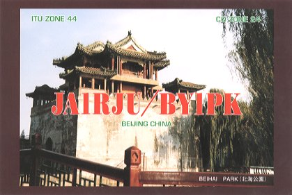

このリポートは 1エリアの入感状況です
全国版「50MHz DX Web Cluster」も参考にして下さい
50MHz DX Web Clusterへ

| '97 Report | |
|---|---|
 |
総集編 |
【Back Issues 97.12】
31.Dec.97
◎ 02:30z頃から02:50zにかけてVK-TV(46.172/46.240MHz)、03:45z頃から04:50zに、ZL-TV(45.240/250/260) が強力に入感したが、“4MHzの差”は大きく、今年最後のオープンとはならなかった?。 1997年も今日が最後、1998年がより良い年となるようお祈りします。30.Dec.97
◎ 今年一年間の6m-DXの入感状況を「総集編」としてまとめました。 リストは、春のVKの初入感の3月2日から、 夏のEsシーズンのアジア、今年最後?の12月20日のZL/VKまで、このページで紹介したものを元にまとめたもので す。29.Dec.97
◎ 年末休暇に入ったためか、日中にQRVしている局が多くなっているが、残念ながら6mのコンデションは落ち 込んだまま。 今日もVK/ZL-TVの入感はない。28.Dec.97
◎ 今日(28日)のクラスターにZL3'sとVK0YQSのQSO(04:21z〜)がリポートされている。 Macquarie Islandから出ているVK0YQS(Doug)は、以前VK9YQS/0でこの島からQRVして、1989年4月5日には JAともQSOしている。(VK9YQS/0のQSL) Macquarie Islandは最近、HF帯でもQSOは簡単ではないが、6mでQRVしているDougにもう少し頑張ってもらい、 再びJAとのQSOを実現してもらいたいもの。 ◎ いよいよ1997年も残すところ僅かとなり、テレビ番組も一年を締めくくる“総集編”の特別番組がめじろ 押しだが、我が“6m band”の今年はどうだったのか...。 簡単に振り返ってみると、今年はこの時期としては“まあまあ”といったところではなかったかと思われる。 新年早々サイクル23に過大な期待してしまったきらいはあったが、まだまだスタートしたばかり。 6mはそん なに甘くはない。 予想ではサイクル23も前サイクルと同じぐらいまで上がってくれるのではないかと言われているが、そうなる 事を期待したいもの。 来年の春以降の上昇によって、このサイクルの“上り具合”が予測できるものと思わ れる。 今年は夏場のEsシーズンは東南アジア方面を除いて期待外れに終わった。 W/KH6などの東方面の入感がほ とんどなかったのは、近年には珍しいことだった。 アジア圏内では、台湾(BV)、香港(VS6/VR2)のアクティ ビテイが上がり、多くの局が入感して賑わったのは良かったのだが、中国(BA〜BY)本土とモンゴル(JT)の入 感が止まってしまったのは残念だった。 特に中国は局数が増えている割りに、6mにQRVしてくる局が少なく、 このシーズン確認出来たのはBG7KW(QSL)ぐらいか。 昨年アクティブだったJT1KAA/JT1BVがQRVしてこなかったのは寂しいものだったが、ロシア(UA0)からのQRV が増えただけ、“北西方向”は楽しめた。 カンボジャ(XU2A)の入感にも見られる様に、東南アジア方面は、 アクティビティさえあれば、距離的には問題無いのでQSOの可能性は多い。 Esシーズンが終った秋のコンデションで本格的にVK/ZLが入感しだしたのは、やはりサイクルの上昇の兆しと 言えそう。 そんな中で沖縄で2度、ブラジル(PY5CC)が入感したのも明るいニュースだった。 ただ、この 南米が「即、本土でも...」と思うのは“早とちり”で、沖縄と“本土”との6mの「コンデションの距離」は 予想以上に“遠い”もの。 これは今年のスカボローリーフ(BS7H）のオープンでも証明済み。 太平洋方面の島では、JD1/JD1、KH2、KH0、T88などの比較的近いところはそれなりにオープンしていたも のの、中部・南太平洋方面では、マーシャル諸島のV73ATとニューカレドニア(FK8)ぐらいで、まだまだ本格 的なオープンには程遠いものだった。 今季QRVのニュースが流れているバヌアツ(YJ8UU)、フィジー(3D2CM)、 アメリカン・サモア(AH8A)などが入感してくるコンデションになれば、サイクル23も“本格的”と言えるの かも。 この南太平洋方面が頻繁にオープンしてくるようになれば、午前中の南米の可能性もゼロでは無いが、 ヨーロッパやアフリカ本土の入感は沖縄を除いてまだまだ先の話？27.Dec.97
◎ 02:55z頃にZL-TV(45.250MHz)が一時的に上昇したが、15分程で消滅。26.Dec.97
◎ 今日も、03:05zから04:30zにかけて、弱いVK/ZLのTVの入感がみられたが、信号は上昇して来なかった。 ソラー・フラックス(S.F)は上昇しているので、このままで今年のコンデションが終ってほしくはないのだ が...。 “巷”では例年よりも2日早く、今日が“仕事納め”。25.Dec.97
◎ 03:30z〜04:40zにかけて、ZL-TV(45.240/250/260MHz)、VK-TV(46.172/240MHz)が入感。 04:00z前後 には、全ての信号がS9まで上昇し、6mのオープンの期待が持たれたものの、コンデションはここまで。残念 ながらクリスマスのプレゼントは無かった。 今日の様にZL-TVが広い範囲で聞こえてくると、同じ周波数で エリアの異なる2波が同時に聞こえて来て、数サイクル以下の“ビート”となって聞こえているのが良く判る。24.Dec.97
◎ ZL/VK-TVの入感も無く静かなクリスマス・イブ。23.Dec.97
◎ 06:00z前後に40分程、46.172MHz(S=9+)、46.240MHz(S=7)が入感していた程度で、コンデションも “凍りついて”いた。 東京は例年より1週間早く「初雪」。22.Dec.97
◎ 05:45頃から45.250MHzのZL-TVが聞こえてきたが、15分程度で“消滅”した。 一昨日(20日)のZL入感は、1、7、0エリアの東日本が中心だったが、入感している場所も狭い範囲で移動す るといった、地域差の大きいオープンだった。 この時期のオープンは今回の様にギリギリのところで開い ているので、すばやいQSOに心がけること。 年始めにZLが入感することが多いので、この短いオープンにも 注目！。 ただし、昨年の様な“ZSオープン！”などといった“ガセねた”には簡単に惑わされることの無 いように！。21.Dec.97
◎ 二日と同じコンデションが続かない最近の6m。今日はVK/ZL-TVの“かけら”もない。20.Dec.97
ZL2TPY 06:00 50.105 SSB QSY to 50.147MHz ZL2AGI 06:06 50.110 CW QSY to 50.105MHz ZL4TBN 06:14 50.160 SSB 50.110MHz CQ CQ...。 VK4KK 06:20 50.110 SSB VK4JSR 06:21 50.130 SSB VK4AR 06:35 50.160 SSB ZL2KT 06:45 50.160 SSB VK4ABW 07:30 50.110 SSB ◎ 今日は5日ぶりのZL/VKの入感で賑わった。ZL-TVは03:30z頃から入感していたが、05:00zには一旦F.OUT。 05:30zから再び入感してきたZL-TVとVK-TVが急激に上昇。 05:58z、50.110MHzのJA1のCQにZL2TPYが呼んで きた。 ZL'sの入感の合間にVK4が聞こえていたが、信号は弱い。 ZL-TVの音声(50.750MHz)も強力に入って いたが、07:00zにはF.OUT。 ZLがF.OUTした後、VK4'sが上昇してきた。19.Dec.97
◎ 05:00z頃に46.240MHzのVK-TVが強力に入感してきたが、50MHzのVKは確認できなかった。 同じ時刻に、 45.240/250MHzのZL-TVも聞こえていたが、こちらは信号も弱い。 06:00zには46.172MHzも上昇してきたが、 50MHzのコンデションは相変わらず静か。18.Dec.97
◎ ふたご座流星群(極大日=13〜14日頃)、こぐま座流星群(極大日=22日頃)と続く流星群による伝搬(M・S) で国内のQSOが楽しめるこの時期、Esとは違ったスリルが味わえる。 伝搬の範囲はEs層と同じなので、1500〜1600km程度の近場を除き、海外とのQSOは望めない。 最近はこの M・S伝搬にトライする局が増えたが、“M・S伝搬”は比較的長いバーストでも数秒程度で終わってしまう のが普通で、双方が“ノンビリQSO”出来る伝搬は、本来のM・S伝搬ではない。 ある程度のパワーと高利 得のアンテナを使っていると普段でも意外に飛んでくれるもの。 M・S伝搬にトライするならローパワーの 方が時間は掛かるが、本来のM・S伝搬を実感出来る。17.Dec.97
◎ 今日の6mは静か。VK/ZLのTVの入感もない。
【話題の局・AH8A】(AH8A=QSL)
再びアクティブにQRVして、VK/ZLとQSOしているアメリカン・ サモアのAH8A(Bill)は1980年にはJAでも 良く聞こえていた。 6m唯一の現地の局...と言っても、本人はK6CLM/KH6WFのコールを持つ米国人。 当時は、テント生活をしながらコンピュータ・プログラムの 開発をしていたとか。 過去にJAからQSOできたKH8は、1980年4月のN6DXとJA1BKによって運用されたN6DX/NH8や、1989年3月の KH8/JJ2ICAグループによる運用などがある。 KH8は島のJA側に高い山があるため、運用場所を選ばないと JAとのQSOは難しいところ。 来春?のKH8の オープンに期待。
16.Dec.97
◎ 今日は“世界的？”に静かな6mバンド。 VK/ZLのTVの入感もなかった。 45/46MHz帯のTVの入感は、VK/ZL 方面への6mオープンの“最低限”の条件のように思われるが、このシーズンのオープンで一度だけTVが全然聞 こえていない中で、VK2が聞こえてきた事がある。 VK2がオープンしている時はシドニーに近い45.240MHzの TVが入感しているのが普通だが、この日(11/28)、シドニーのVK2DNが1局だけ弱いCWで20分ほど聞こえていた。
【話題の局・ZL4TBN】 (ZL4TBN=QSL)
今季アクティブにZL4からQRVしていたZL4TBN・Dave。 QSLのデザインでも判る通り、彼は地震の研究者。 ホームページで地震関係の情報を流している。 ホームページのアドレスは、Public Seismic Network http://psn.quake.net/dave/home.htm 尚、QSLは下記の住所に“Direct”で送ってほしいとの事。 Dave A. Nelson ZL4TBN 24 Jensen St., Green Is.,Dunedin, South Is..New Zealand.15.Dec.97
◎ 今日のコンデションは南半球へ。 Esによる、AH8A(アメリカン・サモア=G.L・AH45)とVK/ZL'sがFBだ ったらしいが、“1/4のホイップに60W”では、JAとのQSOは、今のコンデションでは難しい？。14.Dec.97
◎ 毎日の様に微妙に変化する45/46MHz帯のVK/ZLのTVの入感状況だが、今日の02:45z頃からのZL-TVは、 昨日とは比較にならないほど弱かった。 替りに46.172MHzのVK-TVは、03:50z前後にフルスケールで入感。 しかし、JA'sのたて続けのCQにも、応答してくる“VK”は確認出来なかった。 05:15zには完全にF.OUT。13.Dec.97
ZL3TY 04:10 50.130 SSB ◎ 久し振りに短時間のオープンながら、ZLが入感。 04:03z、50.110MHzで、ZL2？を呼んでいるZL3TYが入感。 JAからのコールに、50.130MHzにQSYしたBobは、この周波数で4〜5局、1エリアとQSOしていたが、04:15z には 聞こえなくなった。 信号はピークでRS57程度。 VK/ZLのTVは03:20z頃から聞こえてきたが、信号は弱かった。 05:30zにはVK/ZL-TVも全て、F.OUT。12.Dec.97
◎ 磁気赤道を挟んだパスが、VK/ZL〜KH6(KH7)にリポートされている。 このところJAからのVK/ZL方面の パスはストップしているが、替りに？南西から西方面が開いている。 昨日、今日と49.750MHzの大陸からの TVが03:00z以降に強かったが、この方面の入感はHL1LTCがリポートされているだけ。 尚、VK/ZLの国内Es が弱まったときには、まだJAとのパスの可能性もわずかながら残されているので、ワッチは欠かさぬように。11.Dec.97
◎ VK/ZLの入感も一段落したが、今シーズンのZLのアクティビティは、この時期としては意外に高かった。 ZL4TBNからの情報によると、現在New ZealandからQRVしている局はZL1＝23、ZL2＝11、ZL3＝13、ZL4＝6 局との事。 現在、ZL4の2局は、ZL1にQSYしていて、実際にZL4からQRVしているのはZL4TBNなど4局だけ。 今シーズン、JA1で確認されたZL'sは次の各局だが、最も局数の多いZL1が50MHz帯にQRV出来なくなったのは、 今後のZLのアクティビティにも影響を与えそう。 ○ JA1で入感したZL's各局 ZL1＝ZL1AKW ZL2＝ZL2KT、2AGI、2TPY、2WBA、2WNB ZL3＝ZL3NW、3TY、3AAU、3ADT、3TIC、3TLG、(3NE＝受信)、3SIX(Beacon) ZL4＝ZL4TBN10.Dec.97
◎ 遂に、VK/ZL−TVの入感もない静かなコンデションとなった。 まだ、サイクル23の本格的な上昇時期に はほど遠いとはいえ、11月20日頃から12月始めにかけてのVK/ZLの入感は、この時期としては、結構楽しま せてくれた。 ただし、休日はオープンに恵まれなかったので、“サラリーマン”には残念なシーズンだった。09.Dec.97
◎ ZLからの“VKの全エリアが強力にオープン”のリポートが届くようになって、そろそろJAからのパスは 困難？になった感じ。 今日もZL-TVは03:00z前後に上昇したが、04:00zにはF.OUT。 昨日と異なるのは、 04:20z頃に、南西方向からの48.250MHzがフルスケールで入感していた事ぐらい。08.Dec.97
◎ 03:30z前後に、久し振り？に“CQを出したくなる”強さまでZL-TVが上昇したが、04:00zを回るとコン デションは急降下。07.Dec.97
◎ VK3〜VK4/5/8、ZL〜VK、V73〜AH8Aなど、南半球の賑わいがクラスター(Cluster)にリポートされているが、 残念ながら、JAまではこのコンデションはやって来ない。 3D2CM、AH8Aなど前サイクルでお馴染みのコールを 耳にするようになってきたのは嬉しいこと。 今日は03:00z過ぎに短時間、弱いZL-TV(45.240/260MHz)が聞こ えた程度。06.Dec.97
◎ 夏に向かう南半球のVK/ZLは、そろそろEsシーズン最盛期。 日本でもEsシーズンは海外からの入感が少な くなるのと同様、VK/ZLでは、そろそろJAなどとのオープンも終わりとなる。 此処のところVK/ZLの入感が無 くなってきているのはこの影響？。 今日は午前中(02:30z)に短時間のZL-TVの入感があったが50MHzのオープ ンはなかった。 珍しく、07:00z頃にZL-TV(45.240/250MHz)、とVK-TV(46.172MHz)が上昇してきた。 この時 間の前後にZL'sと3D2CM、V73ATのコンタクトがリポートされているが、JA1ではDXの入感は確認できなかった。 ◎ この“秋のオープン”で、ZL1AKWが51.390MHzの周波数を指定してQRVしてきて、“51MHzのZL”を知らな い世代のハムを戸惑わせたが、これはニュージーランド北島のオークランド(ZL1)で、新たにTV局が放送を開 始したことにより、今年から50MHz帯でのアマチュア局の運用が制限されたため。 51MHz帯は二次使用ながら、 引き続きアマチュア局が運用出来るが、6m帯でのこの“1MHzの差”は大きい。 日本での51MHz帯は、アマチュアバンド使用区分で「FM」の使用区分に制定されているが、“ZLとのQSOのため” に特例（注・付き）で、“外国のアマチュア局とのQSOに限り”、AM系（電話・電信）及びCWによる通信にも 使用できることになっている。 以前は51.110MHzがZLのメイン周波数だった。 ZL1AKWがなぜこれより高い 51.390MHzを指定してきたのか不明だが、たぶんTV局からのバズなどの妨害がなく、クリヤーな周波数だった のではないかと思われる。 尚、ZL1以外のエリアでは、従来通り50MHz帯が使用できる。 外国のアマチュア局とのQSOにのみ使える周波数の特例として、RTTYなどの通信用（狭帯域デジタル通信） として、50.000〜50.100MHzが認められている。 これらの周波数はあくまでも“外国の局を相手にするとき” だけなので、“日本の局同志のQSO”は「違反」になるので注意。05.Dec.97
◎ 3日連続の静かな50MHz帯。 弱いZL-TV(45.260MHz=南島)が、03:40z頃に聞えただけ。04.Dec.97
◎ 03:45z前後に、VK-TV(46.172/240MHz)が上昇したが、50MHz帯までコンデションは上がって来なかった。 45MHz帯のZL-TVは04:00z頃に弱く聞えた程度。03.Dec.97
◎ 02:50z、45.250MHzのZL-TVの弱いオープンから始まった今日のコンデションだったが、03:45zに45.240/ 260MHzとVK-TV(46.240MHz)とともに短時間上昇したものの、コンデションはそれまで。 50MHz帯のJA'sのCQは、 全て空振り?。02.Dec.97
VK2QF 03:27 50.110 CW VK4APG 03:38 50.110/180 SSB VK4GPS 03:40 50.140 SSB VK2HO 03:45 50.110/120 SSB ◎ 今日もZL-TV(45.240/250/260MHz)は、02:10z頃から入感してきた。 昨日と異なるのは、直後にVK-TV (46.172/420MHz)も強力に上昇してきたこと。特に、46.172MHzは異常に強い。 03:28z、50.110MHzのCQに、VK2QFが応答してきた。 今日は上記の4局が入感していたが、0405z頃には 全てF.OUT。 期待されたZLのオープンはなかった。 VKのTVも、05:14zには聞こえなくなった。01.Dec.97
ZL3TY 03:35 50.110/145 SSB ZL2WBA 03:45 50.135 SSB ZL3AAU 03:49 50.110/145 SSB ZL3TLG 03:51 50.130 SSB ZL3TIC 04:02 50.110 SSB ZL3NW 04:08 50.110/170 SSB VK1VP 04:09 50.110 SSB ZL3ADT 04:12 50.110 SSB VK2ERF 04:14 50.105 SSB VK3AMK 04:16 50.105/135 SSB VK2ZDX 04:20 50.105 SSB ZL3AAU 04:24 50.145 SSB ZL3SIX/B 04:29 50.040 CW (Beacon) ZL4TBN 04:40 50.110/140 SSB VK3AJK 04:50 50.160 SSB ◎ 02:20z頃から入感してきたZL-TV(45.240/250/260MHz)は、10数分後には急上昇。 03:35z、50.110MHzの CWの最初のCQにZL3TYがSSBで応答してきた。 次々に入感してくるZL'sは強力で、04:00zを過ぎるころから 信号は59+まで上昇。 普段は聞こえてこない50.040MHzのZL3SIXのビーコンも、RST579程で聞こえていた。 ZL'sに混じってVK1.2.3も聞こえていたが、ZLに比べ、信号は上昇しなかった。 05:05zには、VK/ZL共にF.OUTしたが、ZL/VKのTVは、05:45z頃まで入感していた。 今季“最強”のZLの入感だった。 【このページの“タイトル”の写真は、'97年11月1日にQRVしたJA1RJU/BY1PK(北京)のQSLです】
| Index | Back Issues |
|---|---|
最新情報へ戻る |